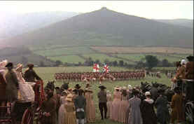

|
Director Stanley Kubrick sets out to make a faithful adaptation of
the William Makepeace Thackeray novel Barry Lyndon and succeed in
capturing the stiffness of another period. The movie follows the
fortunes of young Redmond Barry from his Irish home to his
adventures in Eastern Europe, through the years of his courtship for
a title of nobility. Spiced with its own unique humor, Barry Lyndon
is a picaresque movie with lush settings, glorious tableaus and an
enduring coldness that fails to give the viewer any sympathy for
even one character that inhabits this world.
 |
|
A Barry Lyndon tableau.
©Warner |
Barry Lyndon is a self-consciously a visual film. Compositions are
meticulously rendered. The perfectionism of director Stanley Kubrick
is legendary, but there is also something very anal about his
uncompromising visions. How many times can you frame a scene in
close-up and pull back with a slow zoom to open a large tableau.
Kubrick does it so many times in Barry Lyndon it calls attention to
itself.
The much-maligned Ryan O’Neal acquits
himself quite well in the role of Redmond Barry, who later takes on
the name of Barry Lyndon and all the pretense nobility but without
title. O’Neal’s often simplistic acting captures the period and
adds its own level of humor to the cold doings. Marisa Berenson is
tranquilly beautiful as Lady Lyndon and Patrick Magee lends The
Chevalier an air of refined decadence.
The music is at once magnificent, adapted
from the work of the great classical composers and at the same time
hypnotic. The even
tempos, visually and orally, that Kubrick strives for in Barry
Lyndon are maintained and even emphasized by the music. Ken Adam’s
sets are acutely detailed.
This
is not a pretty DVD. The splendor of Barry Lyndon requires elements
in pristine condition and the various lighting and the grainy
filming needs extra special attention in the transfer bay. Edge
enhancement rather rudely asserts itself in most every scene. This
exacerbates grains and adds unwelcome jitter. There are enough
problems native to the NTSC system; it can do without extra
enhancement. Some
scenes do look quite wonderful. Could the photography be so
inconsistent? I doubt that the Oscar winning photography of John
Alcott is the culprit in this case. Color is nicely saturated
throughout the DVD, though some slight color bleeding occurs from
time to time in high transition areas. More problematic is that the
many interior scenes that are shot with bright light streaming
through the windows wreak havoc with power supplies. My system did
not do so well and blue bloom and blue washout of peripheral blacks
occurred far too often for my viewing pleasure. There are plenty of transfers that have similar lighting
conditions without the blue washing. Too bad. It’s similar to the
problems encountered on Excalibur. The sound is presented in mono,
as was the production. The music is just fine and the varied accents
are easy to understand.
|